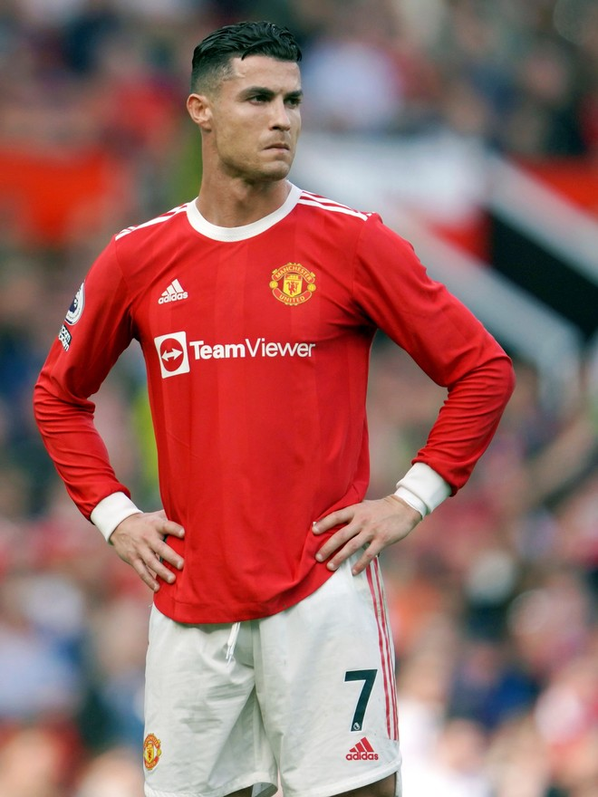
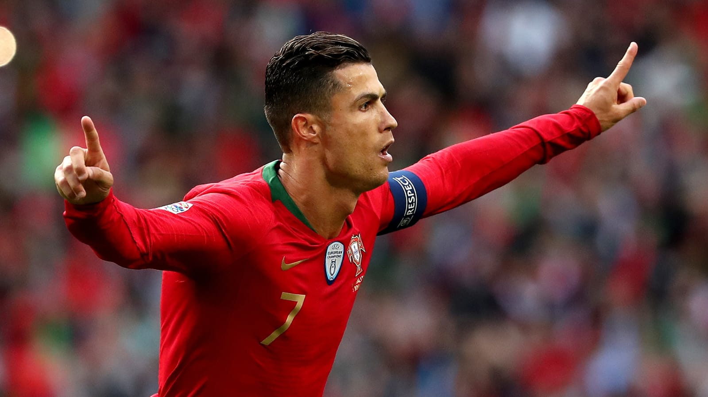
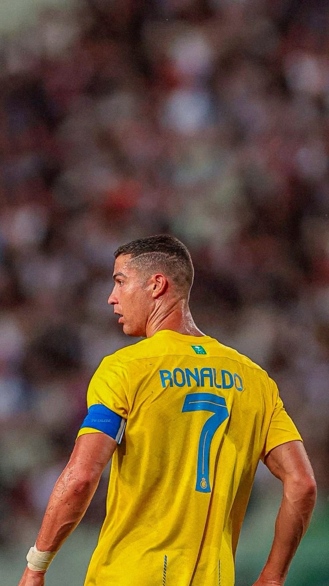
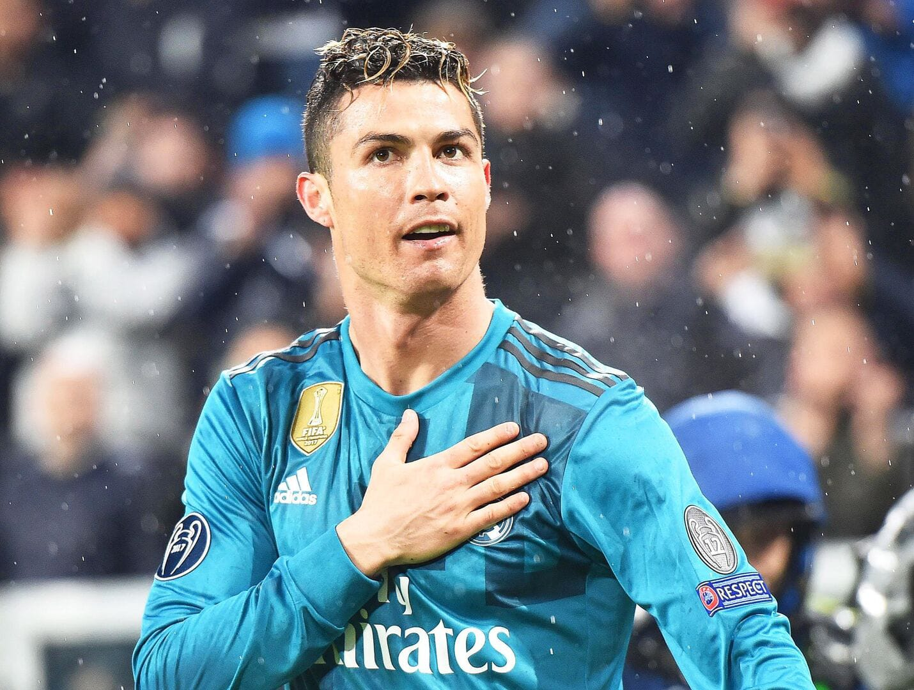
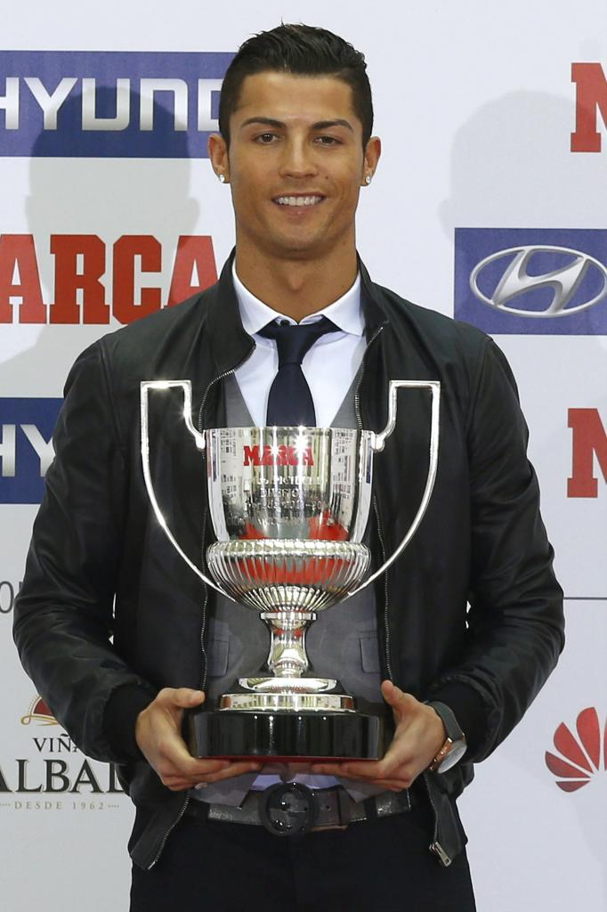

NATALIA NICOLE REYES MEDINA, ESTUDIA PRIMER AÑ0 DE BACHILLERATO, EN EL INSTITUTO NACIONAL DE ANTIGUO CUSCATLÁN (INAC). OPCIÓN DESARROLLO DE SOFTWARE, EDAD 15 AÑOS .
Descubre la Historia de cristiano ronaldo: el mejor jugador del mundo
Cristiano Ronaldo es un futbolista portugués considerado uno de los mejores delanteros del panorama actual. Nació el 5 de febrero de 1985 en Funchal, Madeira, en el seno de una familia humilde. Desde muy pequeño mostró sus excepcionales aptitudes para el fútbol y se unió al Club Deportivo Nacional de su localidad. A los diez años, fue descubierto por el Sporting de Lisboa y comenzó a jugar en su equipo juvenil.
ACERCA DE LOS LOGROS DE CRISTIANO RONALDO

Cristiano Ronaldo ha logrado una amplia variedad de récords y títulos a lo largo de su carrera. A continuación, se presentan algunos de los más destacados:
Récords en el Fútbol
Goles en una temporada**: 61 goles en 54 partidos en la temporada 2014-2015[1]
Goles en una edición de la UEFA Champions League**: 17 goles en 11 partidos en la temporada 2013-2014[1].
Goles en una temporada en la Liga de Campeones**: 17 goles en 11 partidos en la temporada 2013-2014[1].
Goles en un año**: 69 goles en 2013[1].
Goles en partidos consecutivos**: 20 goles en 12 partidos consecutivos en la temporada 2014-2015[1].
Récords con el Real Madrid
Máximo goleador de la historia del Real Madrid: 451 goles en 438 partidos[3].
Máximo goleador en la Liga de Campeones: 105 goles en la competición[3].
Máximo goleador en una temporada con el Real Madrid: 61 goles en la temporada 2014-2015[3].
Más partidos de tres o más goles en la Liga: 34 partidos[3].
Más goles en una temporada en la Liga: 312 goles[3].
Récords con la Selección Nacional
Máximo goleador de la selección portuguesa: 130 goles en 207 partidos[2].
Máximo goleador en la historia de la Eurocopa: 9 goles[2].
Máximo goleador en la historia de la Liga de Naciones: 7 goles[2].
Récords en la UEFA Champions League
Jugador con más partidos en competición de clubes de la UEFA: 197 partidos[5].
Máximo goleador en competiciones de clubes de la UEFA: 145 goles[5].
Máximo goleador en la UEFA Champions League: 140 goles[5].
Máximo goleador en una temporada de la UEFA Champions League: 17 goles en la temporada 2013-2014[5].
Más goles en eliminatorias de la UEFA Champions League: 67 goles[5].
Palmarés
Títulos con el Real Madrid: 4 Copas de Europa, 3 Mundiales de Clubes, 3 Supercopas de Europa, 2 Ligas, 2 Copas del Rey y 2 Supercopas de España[3].
Títulos con la selección portuguesa: 1 Eurocopa[2].
Estos logros y récords reflejan la destacada carrera de Cristiano Ronaldo en el fútbol.
CHAMPIONS LEAGUE:

Cristiano Ronaldo ha tenido una destacada carrera en la UEFA Champions League, con una amplia variedad de logros y récords. A continuación, se presentan algunos de los más destacados:
Récords en la UEFA Champions League
Máximo goleador de la historia de la Champions League: 140 goles.
Máximo goleador en una temporada de la Champions League: 17 goles en la temporada 2013-2014.
Más goles en eliminatorias de la Champions League: 67 goles.
Máximo goleador en una edición de la Champions League: 17 goles en la temporada 2013-2014.
Más partidos en la UEFA Champions League: 183 partidos.
Único jugador que ha marcado en tres finales de la UEFA Champions League.
Uno de los dos jugadores que ha marcado en los seis partidos de la fase de grupos de la UEFA Champions League.
Único jugador que marca en once partidos consecutivos de la UEFA Champions League.
BALONES DE ORO:

Cristiano Ronaldo ha ganado un total de 5 Balones de Oro a lo largo de su carrera:
1. 2008 - Cristiano Ronaldo ganó su primer Balón de Oro mientras jugaba para el Manchester United.
2. 2013 - Cristiano Ronaldo ganó su segundo Balón de Oro, superando a Lionel Messi y Franck Ribéry.
3. 2014 - Cristiano Ronaldo ganó su tercer Balón de Oro, nuevamente superando a Lionel Messi y Manuel Neuer.
4. 2016 - Cristiano Ronaldo ganó su cuarto Balón de Oro, tras ganar la Champions League con el Real Madrid y la Eurocopa con Portugal.
5. 2017 - Cristiano Ronaldo ganó su quinto y último Balón de Oro hasta la fecha, igualando así el récord de Lionel Messi.
Desde entonces, Messi ha ganado 3 Balones de Oro más, ampliando su ventaja a 8-5 sobre Cristiano Ronaldo en este prestigioso premio individual. Ambos futbolistas han dominado el Balón de Oro en la última década y media, convirtiéndose en los dos jugadores que más veces lo han ganado en la historia.
Cristiano Ronaldo ha ganado un total de 5 Balones de Oro a lo largo de su carrera:
PREMIER LEAGUE:

Cristiano Ronaldo ha ganado tres títulos de la Premier League con el Manchester United:
1. 2006-2007: Manchester United ganó la Premier League con 80 puntos, superando a Chelsea por 2 puntos.
2. 2007-2008: Manchester United ganó la Premier League con 87 puntos, superando a Chelsea por 7 puntos.
3. 2008-2009: Manchester United ganó la Premier League con 90 puntos, superando a Liverpool por 7 puntos.
Estos títulos se lograron bajo la dirección del entrenador Alex Ferguson y con la participación de otros jugadores destacados como Wayne Rooney, Ryan Giggs y Paul Scholes.
TROFEOS PICHICHI:

Cristiano Ronaldo ha ganado 4 Trofeos Pichichi a lo largo de su carrera:
1. 2010-11 (La Liga): Cristiano Ronaldo ganó su primer Trofeo Pichichi con 40 goles.
2. 2013-14 (La Liga): Cristiano Ronaldo ganó su segundo Trofeo Pichichi con 31 goles.
3. 2014-15 (La Liga): Cristiano Ronaldo ganó su tercer Trofeo Pichichi con 48 goles.
4. 2020-21 (Serie A): Cristiano Ronaldo ganó su cuarto Trofeo Pichichi con 29 goles en la Serie A con la Juventus.
El Trofeo Pichichi es el premio que se otorga al máximo goleador de la temporada en la Primera División de España, también conocida como La Liga. Cristiano Ronaldo ha dominado este premio en varias ocasiones, demostrando su extraordinaria capacidad goleadora a lo largo de su carrera en el Real Madrid y la Juventus.
Estos 4 Trofeos Pichichi se suman a los numerosos otros logros y récords que Cristiano Ronaldo ha conseguido, reafirmando su estatus como uno de los mejores y más prolíficos goleadores del fútbol mundial.
Aqui te dejo unos videos de cristiano ronaldo mejor jugador del mundo: